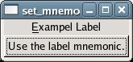

If the label has been set so that it has an mnemonic key (using set_markup_with_mnemonic() , set_text_with_mnemonic() or the constructor) the label can be associated with a widget that is the target of the mnemonic. When the label is inside a widget (like a GtkButton or a GtkNotebook tab) it is automatically associated with the correct widget, but sometimes (i.e. when the target is a GtkEntry next to the label) you need to set it explicitly using this function.
The target widget will be accelerated by emitting mnemonic_activate on it. The default handler for this signal will activate the widget if there are no mnemonic collisions and toggle focus between the colliding widgets otherwise.
Example 90. Setting the Mnemonic Widget of a GtkLabel
<?php
// A callback for the button.
function buttonActivated()
{
echo "The button was activated\n";
}
// Create a window to hold the label.
$window = new GtkWindow();
// Set up the window to close cleanly.
$window->connect_simple('destroy', array('Gtk', 'main_quit'));
// Create a label.
$label = new GtkLabel('_Exampel Label', true);
// Create the button.
$button = new GtkButton('Use the label mnemonic.');
// Set up a mnemonic-activate callback for the button.
$button->connect_simple('mnemonic-activate', 'buttonActivated');
// Set the button as the label's mnemonic widget.
$label->set_mnemonic_widget($button);
// Create a box for the label and button.
$vBox = new GtkVBox();
// Add the label and button to the box.
$vBox->pack_start($label);
$vBox->pack_start($button);
// Add the label to the window.
$window->add($vBox);
// Show the window and start the main loop.
$window->show_all();
Gtk::main();
?> |

See also: get_mnemonic_widget()